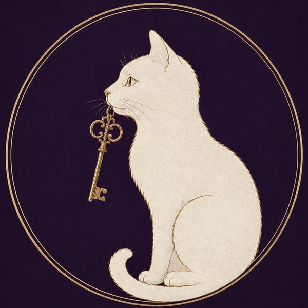

誰にも言えない恋の扉を、そっと開く
鑑定をお待ちの
あなたへ
Irumi
イルミ|ご縁を結ぶ霊視占い
このたびは無料鑑定にご応募いただき、
本当にありがとうございます。
あなたの波動を丁寧に読み解きながら、
ご応募順に鑑定を進めています。
ご案内はこちらから
Flow
鑑定の流れ
- 公式LINEから無料鑑定に応募ご相談内容・お名前・生年月日などをお送りいただきます
- ご応募の受付受付が完了すると、LINEでお知らせします
- 霊視・鑑定中いまここご応募順に、ひとりずつ心を込めて鑑定しています
- 鑑定結果のお届け公式LINEのトークにて、文章でお送りします
Before your reading
無料鑑定の効果を
最大にするための
心構え 7つ
鑑定をお待ちいただく間に、
少しだけ読んでみてください。
あなたのために、
一つひとつ丁寧に読み解いています。
応募してくれたその一歩を、しっかり受け取りました
「誰かに相談してみよう」と決めてくれたこと、本当に嬉しく思います。その想いに応えられるよう、心を込めて鑑定します。
いただいた言葉のすべてに、想いを込めて向き合います
短い文章の中にも、あなたの迷いや願いがたくさん詰まっています。そのひとつも取りこぼさないよう、大切に読み解きます。
本当の気持ちを、そのまま預けてください
「こうあるべき」ではなく「本当はどうしたいのか」。どんな想いも否定しません。その気持ちごと受け止めて読み解きます。
あなたのことを知るほど、もっと分かってあげられます
どんな出会いだったのか、今どんな気持ちなのか。詳しく知るほど、あなたにぴったりの答えをお伝えできます。
相手の気持ちと同じくらい、あなたの心も大切にします
相手のことだけでなく、あなた自身が幸せになれる形を一緒に見つけていきましょう。
結果は、何度でも読み返してください
言葉の一つひとつに意味を込めています。時間をおいて読むと、また違う気づきがあるはずです。
ひとりで抱え込まないでくださいね
恋の悩みは、ひとりで考えるほど重くなるもの。あなたが前を向けるまで、私はいつでもここで寄り添っています。
では、無料鑑定で
お会いしましょう。
Today's Card
今日のカード
待ち時間に、カードを1枚めくってみてください
Profile
イルミについて

イルミ
ご縁を結ぶ霊視占い師
わたし自身、複雑な恋愛を経験してきました。だからこそ、誰にも言えない恋の苦しさがわかります。あなたの波動を読み解き、否定することなく、愛される運命へとそっと導きます。
— こんなお悩みに —
Q & A
よくあるご質問
相談内容は秘密にしてもらえますか？
はい、秘密は必ずお守りします。ご相談内容や個人情報を、第三者に公開・共有することは一切ありません。
既婚者や、人に言えない関係でも相談できますか？
もちろんです。不倫・浮気・秘密の恋など、どんなご関係でも否定せずにお話を伺います。
結果はいつ届きますか？
ご応募順に鑑定し、公式LINEでお届けします。たくさんのご応募をいただいているため、順番が来るまで少しだけお待ちください。
相談内容を変更したいです
鑑定を始める前であれば変更可能です。できるだけ早めに公式LINEでお知らせください。
Notice
ご注意
- 鑑定結果は、未来を断定するものではありません。
- 医療・法律・投資などの判断は、専門家へご相談ください。
- ご応募が多い場合、お届けまでお時間をいただくことがあります。
Links